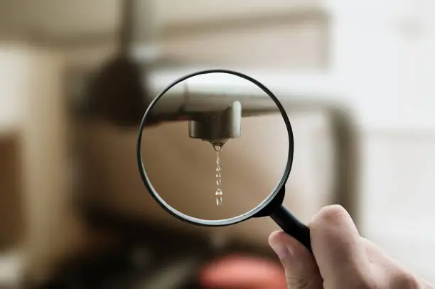

Recherche de fuite 33 - Detection Fuite eau 33 Gironde
DEVIS GRATUITRecherche et Réparation de Fuites d’Eau

Pourquoi faire appel à un professionnel ?
Une fuite d’eau peut provoquer d’importants dégâts matériels et augmenter considérablement votre consommation. L’équipe Acqua intervient dans tout le département de la Gironde (33) avec des outils modernes de détection non destructive et une expertise reconnue. Grâce à la caméra thermique, l’écoute acoustique et d’autres méthodes précises, nous identifions rapidement l’origine du problème, même lorsqu’elle est invisible.
Comment se déroule une recherche et une réparation de fuite ?
Après avoir localisé la fuite, nos techniciens procèdent immédiatement à la réparation adaptée. Qu’il s’agisse d’une fuite sur une canalisation encastrée, une chasse d’eau, un robinet ou un réseau de chauffage, l’intervention est ciblée, rapide et réalisée sans démolition inutile. Notre objectif : restaurer l’étanchéité et éviter toute dégradation future.
Quel est le coût d’une recherche et réparation de fuite ?
Le prix dépend du type de fuite, des techniques nécessaires à sa détection et du niveau de complexité des travaux. Acqua fournit toujours un devis transparent avant toute intervention. Pour une estimation gratuite, contactez-nous au 06 23 16 13 42 ou remplissez notre formulaire de devis en ligne.